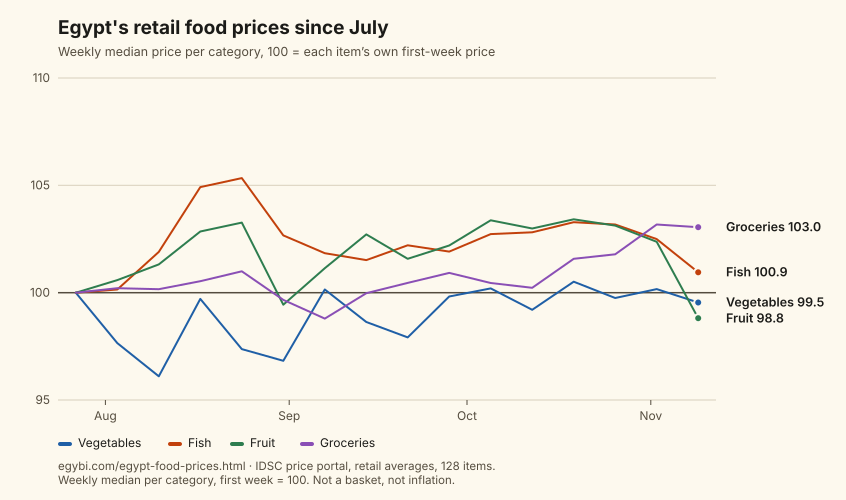

Daily prices · to · measured, not estimated
Egypt’s food prices, measured since July.
Every retail price the government’s portal published, kept day by day since mid-July. How far each category moved, and how that compares with the pound.
Across 128 food items, the median retail price moved +1.4% from the first week (from 18 July 2026) to the last (to 6 November 2026): 83 items rose, 43 fell and 2 ended where they started.
Over nearly the same weeks (21 July 2026 to 6 November 2026) the dollar went from EGP 51.09 to EGP 53.90, +5.5%. The median food price moved less than the dollar's price in pounds did. That compares two measured numbers; it does not say one caused the other.
Of the larger categories, groceries rose most (median +2.8% across 20 items) and vegetables least (−0.4% across 35).
The portal published prices on 92 of the 112 days in this window. Single days are noisy: on 18 August 2026 the median fish price stood 20.4% from its starting level with every item reported, and 2.9% from it on the next day the portal published. So items are compared first week to last week, and the chart shows weekly medians.

Source: the IDSC local prices portal (Egyptian Cabinet), retail averages across outlets, kept daily by EgyBI since July. Each item is compared by the median of its prices in the first week and in the last week of the window; the chart shows weekly medians. These are price averages for items, not a household basket and not an inflation rate.
By category
| Category | Items | Median change |
|---|---|---|
| Vegetables | 35 | −0.4% |
| Fish | 29 | +2.0% |
| Fruit | 23 | +1.1% |
| Groceries | 20 | +2.8% |
| Dairy few items: not charted | 11 | +3.0% |
| Grain few items: not charted | 8 | +1.4% |
| Meat few items: not charted | 2 | +4.8% |
The biggest moves
Rose most
- Onions البصل كيلو: EGP 13.79 → EGP 20.73 +50.4%
- Potatoes البطاطس كيلو: EGP 19.12 → EGP 24.29 +27.0%
- Frozen Mackerel fish الماكريل المجمد كيلو: EGP 173 → EGP 206 +19.3%
- Egg البيض كرتونة: EGP 103 → EGP 122 +19.0%
- Watermelon البطيخ واحدة: EGP 71.91 → EGP 84.18 +17.0%
Fell most
- Lipton Tea - 40 gm. شاى ليبتون 40 جم عبوة: EGP 19.44 → EGP 12.91 −33.6%
- Local lemon الليمون البلدي كيلو: EGP 47.92 → EGP 35.56 −25.8%
- Persimmon كاكا كيلو: EGP 56.67 → EGP 46.83 −17.4%
- Chili pepper فلفل (حامي) كيلو: EGP 26.75 → EGP 22.83 −14.7%
- Imported banana موز مستورد كيلو: EGP 57.12 → EGP 49.2 −13.9%
Put this chart on your own site.
An image that links back here and is rebuilt with the data. Please keep the credit line inside the image.
<a href="https://egybi.com/egypt-food-prices.html"><img src="https://egybi.com/charts/egypt-food-prices.svg" alt="Egypt's retail food prices since July: median price index by category (EgyBI)" width="846" style="max-width:100%;height:auto" loading="lazy"></a>Or open the chart on its own to save it.